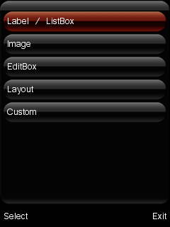
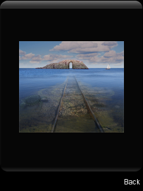
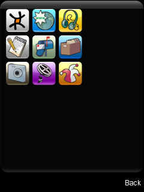
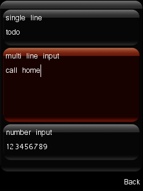
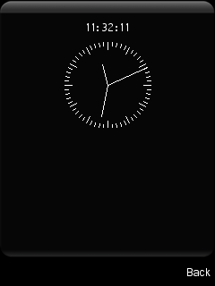
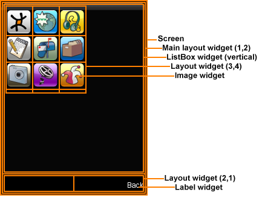

This application demonstrates the variety of widgets available in the MAUI library and how to use the ListBox and Layout widgets to arrange widgets on a screen.
|  |  |  |
|  |  |
This example is included in the MoSync SDK's /examples/MAUI folder. For information on importing the examples into your workspace, see Importing the Examples.
When the application has started the user is presented with a simple menu. Following the menu items takes you to other screens that demonstrate different widgets.
The layout of each screen is controlled by a combination of Layout and ListBox widgets. For example, for the Layout screen:

It is worth taking some time to examine the code of the MAUIex example to understand how the Layout and ListBox widgets work together for each screen.
The following screens are available:
For a comprehensive description of MAUI, see our tutorial called Introduction to MAUI.